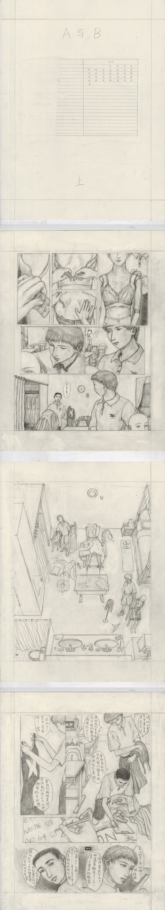
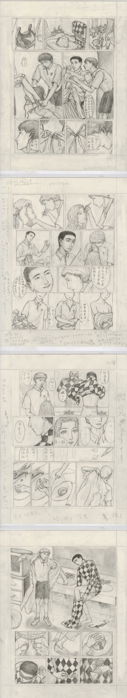
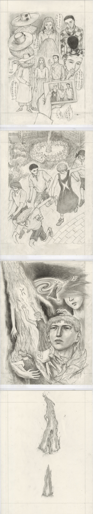
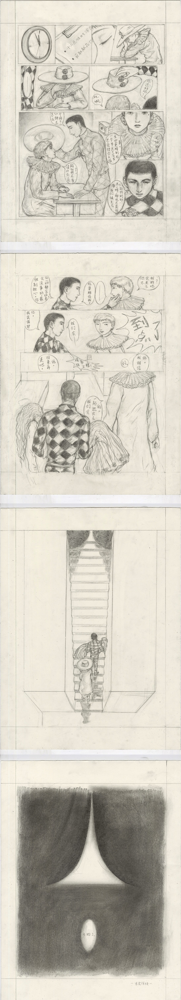

This is the story about Xiaohe's Friend A and B. Xiaohe appears in their memory.
That period of time was happy for Xiaohe. She forgot everything about her past and she thought she was an ordinary person like anyone else.
She lives as if she is one of the other people.
A and B are not part of the experimentation. But e still documented it as a private file.



